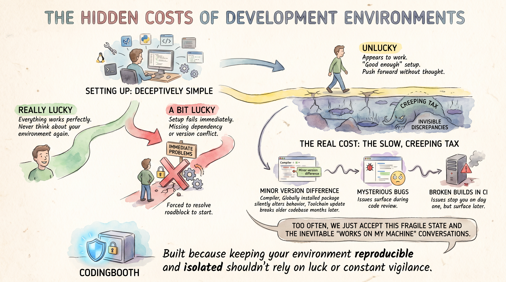

28 June 2026 · Nawa Man
Getting into a project fast is only half the job — getting in right is the other half. Why onboarding shouldn't rely on luck.
Setting up a software development environment often feels deceptively simple. You pull a repository, run a few standard install commands, and start writing code. Depending on how that goes, you usually fall into one of three buckets:

For many developers, that “good enough” setup in the third bucket is where the process ends, allowing them to push forward without much thought. But the real cost of environment management isn't an upfront roadblock — it's the slow, creeping tax of invisible discrepancies.
A minor version difference in a compiler, a globally installed package that silently alters a project's behavior, or a toolchain update that inexplicably breaks an older codebase months later. These issues don't stop you on day one; they surface as mysterious bugs during code review or broken builds in CI. Too often, we just accept this fragile state and the inevitable “works on my machine” conversations as a frustrating fact of life. CodingBooth was built because keeping your environment reproducible and isolated shouldn't rely on luck or constant vigilance.
Quick onboarding means the distance between “I have the repo” and “I'm writing code” is a single command. No README full of platform-specific install steps, no afternoon spent chasing a missing system library, no Slack thread asking which version of the toolchain everyone else is on. You clone, you run the booth, and the environment builds itself.
git clone <repo> && cd <repo> && ./boothThe environment is declared in the repo, in a small .booth/ folder, so the very first
command a new teammate runs is also the command that gives them the exact setup. There's
nothing to install by hand and nothing to get subtly wrong. A new hire, a teammate switching
branches, or future-you reviving a dormant project all reach a working environment in minutes —
not on day three.
Quick is only half of it. The “Unlucky” path from the start of this post is quick too — it just happens to be wrong in ways you won't notice for weeks. Onboarding right means everyone gets the same image: the same compiler at the same version, the same libraries, the same running services, every time the booth is built.
Because the booth is created from its definition and thrown away when you're done, there's no long-lived machine accumulating drift. The definition lives in version control next to your code, so the environment changes only when the repo changes — reviewed in the same pull request as everything else. That's what turns off the creeping tax: no minor version difference sneaking in, no globally installed package silently changing behavior, no “it used to build.” The environment stops being a variable, so the only thing left to explain a bug is the code itself.
“Quick and right” pays off differently depending on what you're building. Here's what it buys a few common kinds of project — and why the cost of getting it wrong lands hardest there.
A notebook's output is the deliverable, and that output depends on the exact versions of numpy, pandas, and a stack of native libraries underneath them. A 0.1 bump in a numerical library can quietly change a result. A booth pins the whole stack and ships the Jupyter front-end with it, so a result that reproduces on your machine reproduces on your colleague's — and on the same notebook a year from now.
# .booth/Boothfile
setup python+notebook“Java is Java” right up until a different JDK vendor or major version changes behavior, or a teammate's Maven build resolves a slightly different dependency tree. For a long-lived service, that's the gap between green CI and a 2 a.m. page. Pinning the JDK and build tool in the booth means the bytecode you build locally is the bytecode that ships.
# .booth/Boothfile
setup java+mavenFront-end builds are famously sensitive to the Node version and to native modules compiled against
it — the classic “delete node_modules and pray” loop. When the runtime is pinned in the
booth, the lockfile resolves the same way for everyone, and a new contributor goes from clone to a
running dev server without a single version-manager incantation.
With Rust, Go, or C/C++, the compiler version isn't a detail — it decides whether the code builds at all, and sometimes how it behaves. Reproducing a teammate's build error is miserable when you can't even be sure you share a compiler. A booth makes the toolchain part of the repo, so “works for me” and “works for you” finally mean the same toolchain.
The moment a project needs Postgres, Redis, or Kafka, onboarding stops being about code and starts being about infrastructure — install the engine, match the version, get it running, seed it. A booth brings those services up as part of the environment, pinned to a version, so a new developer gets a working database on the first command instead of a half-day of setup. And because it's isolated, two projects can each run their own Postgres without fighting over a port or a global install.
# .booth/Boothfile
setup postgresqlNothing derails a class faster than thirty laptops in thirty slightly different states. When the environment ships with the materials, every student is at parity on minute one — and the grader runs in the same booth the students used, so “it ran in class” and “it passes grading” can't disagree. Onboarding quick keeps the room moving; onboarding right keeps the grades fair.
Handing an AI assistant a shell is exactly the case where isolation earns its keep. Let it run go install that@latest or try a risky upgrade inside the booth, and the blast radius
stays in the booth — if it goes wrong, you throw the booth away and start clean, with nothing leaked
onto your host. And because the booth is reproducible, whatever the assistant set up is something
your teammates can rebuild exactly, not a one-off that lives only on your machine.
# .booth/Boothfile
setup claude-codeQuick onboarding gets people working today; right onboarding keeps them — and everyone after them — working without paying the creeping tax. You don't have to choose between the two, and neither should rely on luck or constant vigilance. Declare the environment once in the repo, and every clone after that is both fast and correct by construction.
Installing CodingBooth is one command:
curl -fsSL https://codingbooth.io/install.sh | bashHappy coding!
Nawa Man
Comments